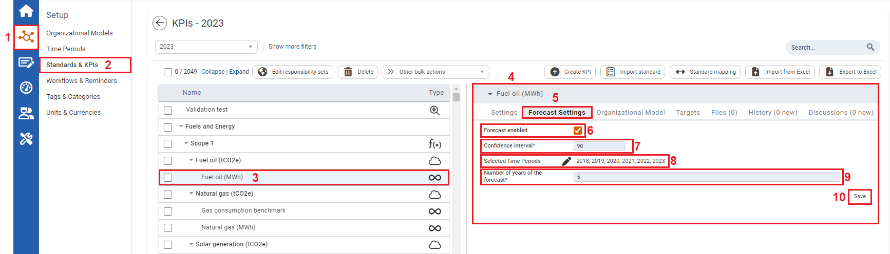

You can adjust Data Forecast Settings, for KPI forecasted performance that you would like calculated for your analysis.
Prior to adjusting the Data Forecast settings, the Data Forecast Tool needs to be enabled (see Enabling the Data Forecast Tool).
To Adjust the Data Forecast settings

| 1 | On the left navigation panel, click Setup. |
| 2 | Click Standards & KPIs. |
|
3
|
Select a KPI. |
|
4
|
Details of the KPI will display to the right. |
|
5
|
Click the Forecast Settings tab. Here you can adjust the forecast settings. |
|
6
|
Ensure Forecast is enabled with a checkmark in the checkbox. |
|
7
|
Users can select a value in the Confidence Interval drop-down textbox in which an event of interest is within. The confidence interval specifies a confidence range in which the value with the specified probability lies. The confidence interval looks at similar previous events that you want to compare. Events that are outliers are not considered. |
|
8
|
In the Selected time periods section select time periods in which you want use to calculate the forecast performance of KPIs Note: To calculate the forecast a minimum of three time periods in the form of years need to be inputted. |
|
9
|
In the Number of years of forecast drop-down menu select a value. |
|
10
|
Click Save. |
Once adjustments have been made to the Data Forecast Setting, the Data Forecast can be viewed in the form of chart (see Viewing Data Forecast in a Chart).